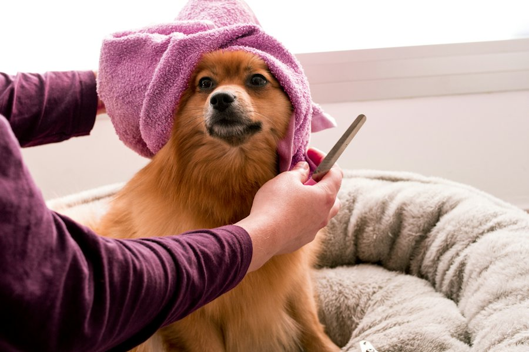

Bain, coupe et soins dans un salon calme, sur rendez-vous. Magali prend le temps qu'il faut avec chaque chien, du chiot au senior.
Le salon accueille les chiens uniquement. Chaque toilettage est adapté à la race, au pelage et au caractère de votre compagnon ; le détail se fait au téléphone ou lors de la prise de rendez-vous.
Shampooing adapté au pelage, rinçage soigné et séchage en douceur.
Coupe aux ciseaux ou tonte selon la race et vos envies, entretien du sous-poil.
Coupe des griffes, oreilles, coussinets : les petits gestes qui comptent.
Un moment de détente proposé au salon, pour les chiens qui en profitent.

Un premier toilettage se prépare : on découvre le salon, les bruits, la table. Pour un chien anxieux ou plus âgé, les pauses font partie de la séance.
Le salon a ouvert au printemps 2026, allée de Villoury à Treffiagat. Les nouvelles du salon sont publiées sur Facebook.
Sur rendez-vous
| Lundi | 9h - 17h30 |
| Mardi | 9h - 17h30 |
| Mercredi | 9h - 17h30 |
| Jeudi | 9h - 17h30 |
| Vendredi | 9h - 17h30 |
| Samedi | 9h - 13h |
| Dimanche | Fermé |